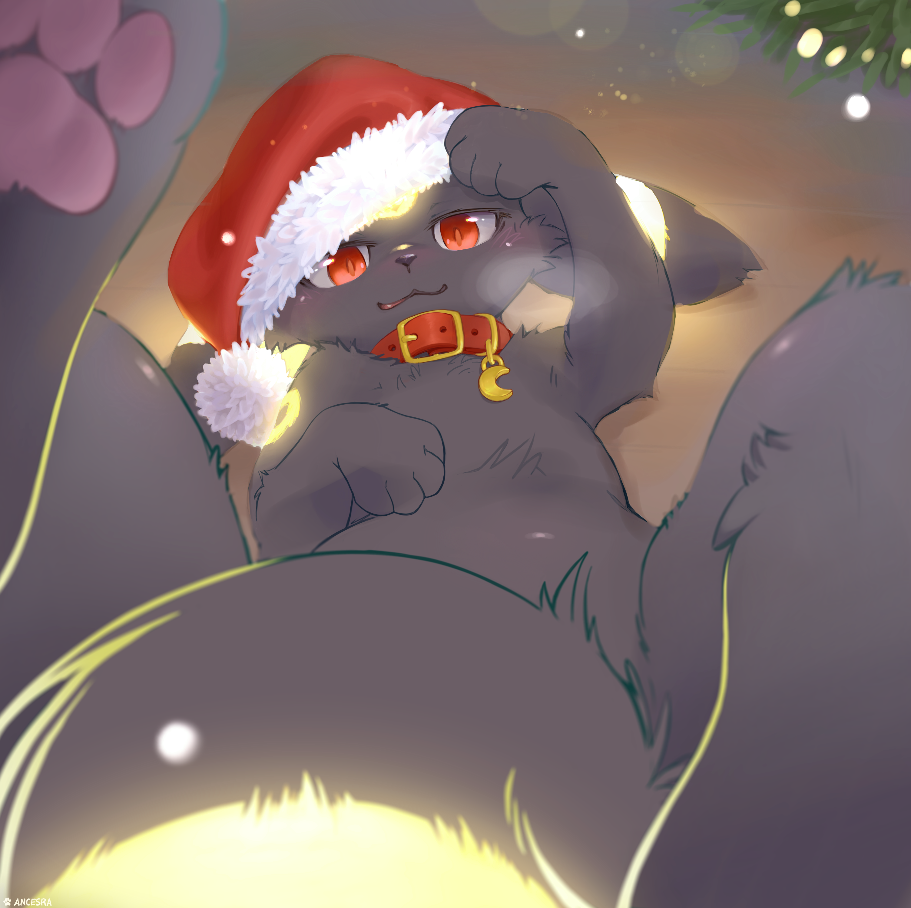

Umbreon
Umbreon es un pokemon de segunda generación (Johto), es de tipo Siniestro. Un Eevee
evoluciona a Umbreon durante la noche y al tener 220 de amistad con él. Al ser tipo
Siniestro es débil ante pokemones de tipo Bicho, Hada y Lucha, pero es superresistente
contra pokemones de tipo Fantasma y Siniestro

Fuente de imagen
Yharon, Dragon of Rebirth
Yharon, Dragon of Rebirth (Dragon del Renacimiento, en español) es un jefe del Calamity Mod
en Terraria. Los jugadores deben enfrentarse a él luego de derrotar al Devorador de Dioses,
usando su invocador "Huevo de dragón de la selva" en la selva. Derrotarlo soltará Fragmentos
de Alma de Yharon, material necesario para fabricar lingotes áuricos.
Yharon, en la historia,
es el último Dragón que quedó en pie tras el final de la Era de los Dragones. Al ser un fénix, su dominio
de poder yace en el renacimiento. Fue sacrificado con el resto de su especie, pero regresó como huevo
destinado a consumir su alma áurica cuando eclosionara, y gobernar para siempre como un dios-rey.
 Fuente de imagen
Fuente de imagen